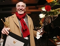
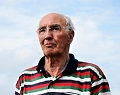
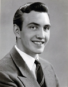

Roland Napoleon Hedlund
Svensk skådespelare, teaterchef och TV-regissör. Blev 85 år.
| Född: | 1933-11-17 Ersmark 15:8, Kågedalens fs, Skellefteå sn. [1] |
|---|
| Levde: | 1971 Bodalsv 22. Lidingö fs, Lidingö kn. [2] |
|---|
| Levde: | 1982 Babel 28, Hjorthagsg 8E, Masthuggs fs, Göteborg, Göteborgs kn. [3] |
|---|
| Död: | 2019-03-08 Klosterskäret 2, Bureå fs, Skellefteå kn. Dödsorsak: Stroke. [4] |
|---|
| Vigsel: | 1964. |
|---|
| Levde: | 1971 Bodalsv 22, II /Hjelm/, Lidingö, Lidingö fs, Lidingö kn. [2] |
|---|
| Skilsmässa: | 1978-12-18. [5] |
|---|
| Levde med: | 2008 Klosterskäret 2, Bureå. [6] |
|---|
| Levde: | 2018 Klosterskäret 2, Bureå fs, Skellefteå kn. [4] |
|---|
Noteringar
Roland Hedlund född Roland Napoleon Hedlund 17 november 1933 i Kågedalen, Västerbotten, svensk skådespelare.
Kågedalen är ett samlingsnamn för orterna Kåge, Ersmark, Kusmark, Sandfors, Storkågeträsk och Hebbersliden i nuv. Skellefteå kommun.
Hedlund filmdebuterade i Lars-Eric Kjellgrens långfilm Våld 1955 och har medverkat i drygt 50 film- och TV-produktioner.
Roland Hedlund var först engagerad vid teatrar i Finland och vid Göteborgs stadsteater. År 1997 kom han till Folkteatern i Göteborg, vars chef han var 1984 - 1987. Som regissör har han bl.a. arbetat med pjäser av Roland Jonsson. Åren 1994 - 97 var han chef för Västerbottensteatern.
Källa Nationalencyklopedin
Roller på Stadsteatern
TOLVSKILLINGEN Minns du den stad, 1970
HERBST De saknade, 1999
Roller på andra teatrar
CLÉANTE Den inbillade sjuke, Landsteatern i Finland
JEAN Fröken Julie, Åbo Svenska Teater
VERSJININ Tre systrar, Åbo Svenska Teater
ASTROV Onkel Vanja, Åbo Svenska Teater
LENNY Hemkomsten, Göteborgs Stadsteater
MARAT Mordet på Marat, Göteborgs Stadsteater
PAPPAN Alla mina söner, Göteborgs Stadsteater
SOLNES Byggmästar Solnes, Riksteatern
MACKIE KNIVEN Tolvskillingsoperan, Lilla Teatern, Helsingfors
ORLANDO Trettondagsafton, Lilla Teatern, Helsingfors
GEORG Möss och människor, Folkteatern i Göteborg
GIOVANNI Vi betalar inte, vi betalar inte, Folkteatern i Göteborg
HADAR Hummelhonung, Västerbottensteatern
Detta är endast ett litet axplock ur Rolands mycket omfattande yrkesverksamhet, där även många regiuppdrag har ingått. Roland har också varit Teaterchef för Folkteatern i Göteborg och Västerbottensteatern. Källa: Stockholm Stadsteaters hemsida.
Roland har också regisserat för TV.
Favoritproduktioner
Personkrets 3:1, Riksteatern
Utsikt från en bro, Fria Teatern
TV: Det löser sig
Film: Festen
Favoritcitat
"En seglare ber inte om medvind; han lär sig segla."
Skådespelare (filmroller från 1955). Född Roland Napoleon Hedlund i Kågedalen, Västerbotten. Han är en av flera skådespelare som gått den långa vägen till skådespelandet via förvärvsarbete. Efter folkskolan arbetade han i diverse yrken som springgrabb, affärsbiträde, lastkarl och på gummifabrik. Vid tiden för värnplikten började han 1954-1956 ta lektioner vid Willy Koblancks teaterskola och därefter började han 1956 turnera i Finland med Landsteatern och blev 1957-1963 engagerad vid Åbo Svenska Teater. Han återvände därefter till Sverige där han 1963-1967 spelade vid Göteborgs stadsteater. 1968 återvände han till Finland och Lilla Teatern i Helsingfors och var där i ett par omgångar och däremellan spel vid Riksteatern. Från 1977 var han vid Folkteatern i Göteborg där han senare också efterträdde Lennart Hjulström som chef 1984-1987. Från 1994 till 1997 var han chef för Västerbottensteatern och har även ägnat sig åt regi bl.a. för tv. Han har kallats en av våra mest kända okända skådespelare. Måhända har den långa vägen till skådespelandet präglat hans rolltolkande där han framställt högst vardagliga personer med en påtaglig naturalism. Han var bl.a. en av de övre medelklassmän som upplever medelålderns livskris i Bengt Bratts och Lennart Hjulströms tv-serie Gyllene år (1975). Detta gäller även den mångfald av myndighetspersoner, poliser och officerare han framställt under senare år. Ibland har detta använts för att skildra vad som kan hända när en högst vanlig människa ställs inför en onormal situation som t.ex. hans huvudroll i tv-serien Bevisbördan (1978), där han spelade en taxichaufför som en dag anklagas för mord och reagerar oförstående på detta. Samma osäkerhet och vankelmod som han tog fram ur denna rollfigur återkom långt senare i en roll som polisen i Jägarna (1996), som gett upp i kampen mot brottet. 1969 tilldelades han en Guldbagge för en annan sådan tolkning av vardagsmänniskan som fadern som blir ett av offren för militärens kulor i Bo Widerbergs Ådalen 31 (1969). Han har varit gift med skådespelerskan Lisa Bergström. P O Qvist (2004)
Guldbagge (bästa skådespelare) 1969 Ådalen 31, 1969
Roll:
Våld, 1955, volontär, sedermera korpral
Svarta palmkronor, 1968, Luleå, sjöman
Ådalen 31, 1969, Harald, hans far
Om 7 flickor, 1973, Gustav, övertillsyningsman
Gyllene år, 1975, Axel Engqvist, direktör
En kille och en tjej, 1975, Bertil, Lenas styvfar, flygofficer
Det löser sig, 1976, Yngve Nord
Bevisbördan, 1978, Martin Andreas Bendix, taxichaufför
Bomsalva, 1978, Erik Bergström, gruvfogde
" Lyftet, 1978, "Sundsvalls-Jesus", bankrånare
Den enes död ..., 1980, Meinert
Rasmus på luffen, 1981, poliskonstapel Andersson
Berget på månens baksida, 1983, Anton
Tryggare kan ingen vara ..., 1984, Bengt, familjehemsförälder
Moa, 1986, tidningsredaktören
Tre kärlekar, 1989, major von Porat, flygledare
Täcknamn Coq Rouge, 1989, Folkesson, chef för SÄPOs mellanösternsektion
Den svarta cirkeln, 1990, Stangenberg
Osynlig närvaro, 1991, Sigvard
Efter föreställningen, 1992, Erik
Den goda viljan, 1992, förvaltare Herman Nagel
Herr O. Nidors irrgångar, 1993, cirkusdirektören
Konsulten, 1993, Kåge Hammar
Kådisbellan, 1993, skolvaktmästaren
Frihedens skygge, 1994, skogsförmannen
Sommaren, 1995, Björne, prästen
Stora och små män, 1995, Hjälm
Vendetta, 1995, Samuel Ulfsson, kommendör vid flottan och chef för den militära
underrättelsetjänsten OP5
Jägarna, 1996, Lasse Bengtsson, kriminalassistent
Fristad, 1999
Lex, 2000
Beck - Kartellen, 2002, Bergstrand
Sjunde stenen, 2002
Taurus, 2002
Barn leker ute, 2003
Jävla skit!, 2003, Gösta
Solisterna, 2003, farfar
De fem stegen, 2004
Hotet, 2004, morfar
En god dag, 2005, Gösta Johansson
Lasermannen, 2005, Bertil Engzell, fritidsfiskare
Parasiten, 2005, Runesson
Forechecking morfar, 2007, Bengan
Källa: Svenska Filminstitutet
193.10.144.135/(S(e3dk5i55axhgc5yu25e10s45))/Person.aspx?Id=65027
Personhistoria
| Årtal | Ålder | Händelse |
|---|
| 1933 |
|
Födelse 1933-11-17 Ersmark 15:8, Kågedalens fs, Skellefteå sn [1] |
| 1946 |
12 år |
Fadern Sven Gunnar Hedlund dör 1946-06-16 Örviken, Skellefteå lfs, Skellefteå sn [7] |
| 1946 |
13 år |
Partnern Eva Kristina Söderlindh föds 1946-12-25 Malmö, Sankt Johannes fs, Malmö stad [8] |
| 1950 |
16 år |
Modern Elsa Kristina Vikner dör 1950-09-12 Ersmark 15:8, Kågedalens fs, Skellefteå sn [9] |
| 1964 |
|
Vigsel Lisa Karin Ingegerd Bergström 1964 |
| 1971 |
|
Levde Lisa Karin Ingegerd Bergström 1971 Bodalsv 22, II /Hjelm/, Lidingö, Lidingö fs, Lidingö kn [2] |
| 1971 |
|
Levde 1971 Bodalsv 22. Lidingö fs, Lidingö kn [2] |
| 1978 |
45 år |
Skilsmässa Lisa Karin Ingegerd Bergström 1978-12-18 [5] |
| 1982 |
|
Levde 1982 Babel 28, Hjorthagsg 8E, Masthuggs fs, Göteborg, Göteborgs kn [3] |
| 2008 |
|
Levde med Eva Kristina Söderlindh 2008 Klosterskäret 2, Bureå [6] |
| 2017 |
83 år |
Brodern Bernt Gunnar Hedlund dör 2017-06-01 Hemmansgatan 189, Skellefteå, Skellefteå lfs, Skellefteå kn [10] |
| 2018 |
|
Levde Eva Kristina Söderlindh 2018 Klosterskäret 2, Bureå fs, Skellefteå kn [4] |
| 2019 |
85 år |
Död 2019-03-08 Klosterskäret 2, Bureå fs, Skellefteå kn [4] |
Dokument
Källor
| [1] | SCB Födda AC Kågedalen 74/1933 k.8/15 |
| |
| | |
| [2] | Mtl Stockholms stad och län 1971 |
| |
| | |
| [3] | Mtl Göteborgs och Bohus län 1982 |
| |
| | |
| [4] | www.ratsit.se/sok/avancerat/person |
| |
| | |
| [5] | Mantalslängd 1991, Stockholms län |
| |
| | |
| [6] | www.eniro.se |
| |
| | |
| [7] | NV - Dödsannonsregistrering 1946-06-18 |
| |
| | |
| [8] | Mtl Göteborgs och Bohus län 1971 |
| |
| | |
| [9] | DB, FB/DOR 50-51 |
| |
| | |
| [10] | FK 17, Spar97, SDB7_12913919 |
| |
|
 |
Roland Hedlund, Svensk skådespelare, teaterchef och TV-regissör
Filmdebuterade i Lars-Eric Kjellgrens långfilm Våld 1955 och har medverkat i drygt 50 film- och TV-produktioner. Han har även varit chef för Västerbottensteatern.
Text: Waldemar Mellqvist, Norran
Källa: norran.se/1933/11/foddes/rolandhedlund/
|
| |
|  |
2008-04-17. Roland Hedlund prisad på filmgala.
När Filmfesten avslutades på lördagen gjorde den det med en gala som anstår varje filmfestival med självaktning.
Som NV tidigare skrivit firade Filmfesten tio år och under galakvällen delades priser ut till produktioner och personer inom Västerbottnisk film som utmärkt sig extra mycket under den tiden.
Eller ännu längre för den delen; Roland Hedlund som medverkat i filmer i över 50 år tilldelades ett ”lifetime achievement award” för sitt liv inom filmen. Sedan debuten i Lars-Eric Kjellgrens långfilm ”Våld” från 1955 har han medverkat i ett 50-tal film- och tv-produktioner, bland annat ”Ådalen 31”, ”Jägarna”, ”Den Goda Viljan”, ”Skärgårdsdoktorn” och ”Beck”.
¿ Jag hade glömt bort hur mycket jag har varit med i, men det här var tjusigt, säger Roland Hedlund om utmärkelsen.
Årets festival bjöd på mer än bara filmvisningar. Med workshops och seminarier har man velat öka intresset för hantverket och under veckan har budskapet varit att film är bäst i den miljö den är skapad för ¿ biosalongen.
¿ Det har flutit på. Vi har haft ett bra utbud med olika sorters film. Publikmässigt är jag överlag nöjd även om det varit mindre besökare vissa dagar, säger Elisabet Andersson, festivalkoordinator.
Hon anser vidare att flytten från Nordanå till Biostaden var ett lyft och att samarbetet fungerat bra.
¿ Det känns som att vi kommer att fortsätta vara där.
Publicerad 2008-04-17
Per Strömbro, Norran
norran.se/2008/04/arkivet/rolandhedlundprisadpafilmgala/
|
| |
|  |
2011-06-14. Roland Hedlund inviger Sagafestivalen
Årets filmfestival i Adak invigs av skådespelaren Roland Hedlund. Genom åren har åtskilliga kända filmskådespelare och artister klippt bandet till festivalen i Adak. I år blir det Västerbottens egen stjärna som får hedersuppdraget.
¿ Det känns jätteroligt att Roland vill komma, dels att vi får se filmen "Det neutrala landet”, en film som filmskolan i Luleå gjort, och som Roland själv valt att visa. Det ska bli mycket spännande och kul, säger Eivor Jonsson, för Sagabiografen i Adak.
Varför föll valet på Roland Hedlund?
¿ Vi har haft många artister från hela landet, nu var det väl dags att visa upp en av "våra egna". De invigare vi haft från länet tidigare har varit Heidi Andersson och Greger Ottosson, så det är dags att hitta en representant för filmens värld. Ingen kunde ha passat bättre.
Skådespelaren Roland Hedlund föddes den 17 november 1933 i Kågedalen, Västerbotten.
Roland Hedlund filmdebuterade i Lars-Eric Kjellgrens långfilm Våld 1955 och har medverkat i drygt 50 film- och TV-produktioner. Han har även varit chef för Västerbottensteatern. Bland filmerna han medverkat i kan nämnas Jägarna och Ådalen 31.
Filmfestivalen invigs den 16 juli i Adak.
Publicerad 2011-06-14
Britta Stenberg
norran.se/2011/06/arkivet/rolandhedlundinvigersagafestivalen/
|
| |
|  |
|
|

{kind=link}
{kind=link}
{kind=link}